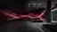
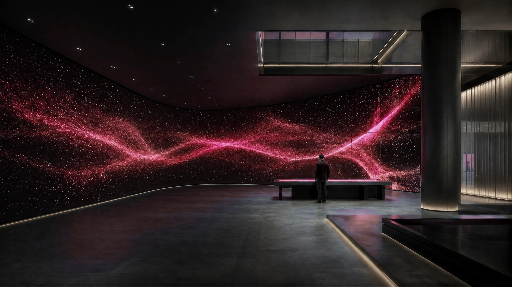

기술의 범위를 넓혀 왔습니다.
얼굴과 움직임을 인식하는 기술에서 시작해, 사용자가 활동하는 디지털 환경과 실제 공간 경험까지 적용 범위를 확장해 왔습니다.
PERCEPTION → INTERACTION → ENVIRONMENT → EXPERIENCE
FROM PERCEPTION TO EXPERIENCE
사람을 인식하는 기술에서 시작해, 시스템의 반응, 디지털 환경, 실제 공간 경험으로 확장합니다.


사람과 행동을 인식하는 기술
컴퓨터 비전, 얼굴 인식, 동작 인식, 추적 기술을 기반으로 사용자의 존재와 행동을 감지합니다.

사용자 행동에 반응하는 시스템 구조
인식된 정보를 기반으로 시스템이 반응하고, 사용자의 움직임과 상태에 따라 인터랙션이 발생하도록 만듭니다.
사람이 활동할 수 있는 디지털 환경
가상환경, 플랫폼, 디지털트윈을 통해 연결, 협업, 상호작용이 가능한 환경을 구축합니다.

기술을 실제 공간 경험으로 확장
소프트웨어, 미디어, VR·AR, 시뮬레이터, 콘텐츠를 실제 공간과 방문자 경험에 연결합니다.


적용 경험을 뒷받침하는 기술 근거


KISA AI HYPER VISION Ver1.0
지능형 CCTV 솔루션 성능인증
AI·ICT 특허
AI 및 ICT 분야 등록 특허 6건
기업부설연구소 · 벤처기업 · TCB T3
기술 개발 기반과 기업 기술등급 이력
진행 중 · 2025–2026
SCO 노아의 방주 프로젝트